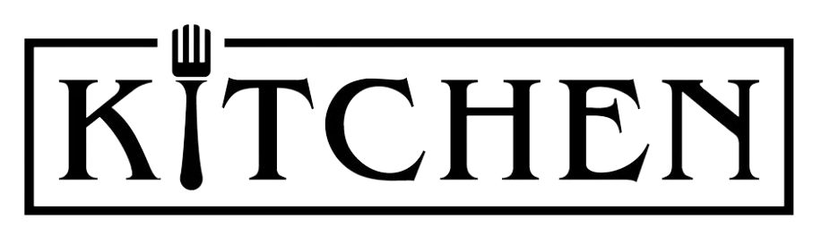

<p>
  <mat-toolbar style="background-color: #F0ECCF; height: 80px;">
    <button mat-icon-button class="example-icon" aria-label="Example icon-button with menu icon" (click)="logout()"
      style="display: flex;justify-content: start;">
      <mat-icon>logout</mat-icon>
    </button>
    <span class="example-spacer"></span>
    <a routerLink="/main">
      
    </a>
    <span class="example-spacer"></span>
    <!-- ngIf="this.isshow==0" -->
    <button mat-icon-button matBadge={{counting}} matBadgePosition="before" matBadgeColor="accent" class="example-icon"
      aria-label="Example icon-button with share icon" routerLink="/cart">
      <mat-icon>shopping_cart</mat-icon>
    </button>

    <button mat-icon-button class="example-icon" aria-label="Example icon-button with menu icon" (click)="listOrder()">
      <mat-icon>menu</mat-icon>
    </button>

    <!-- <div class="demo-section">
                  <button mat-raised-button color="primary" matBadge="8" matBadgePosition="before" matBadgeColor="accent">
                    Action
                  </button>
                </div> -->
  </mat-toolbar>
</p>
